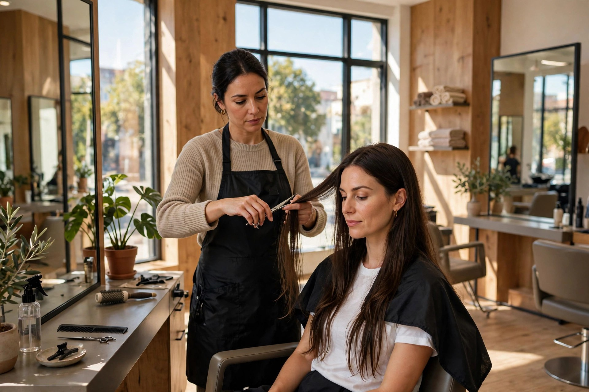
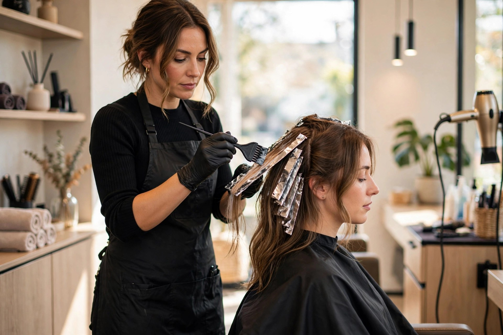
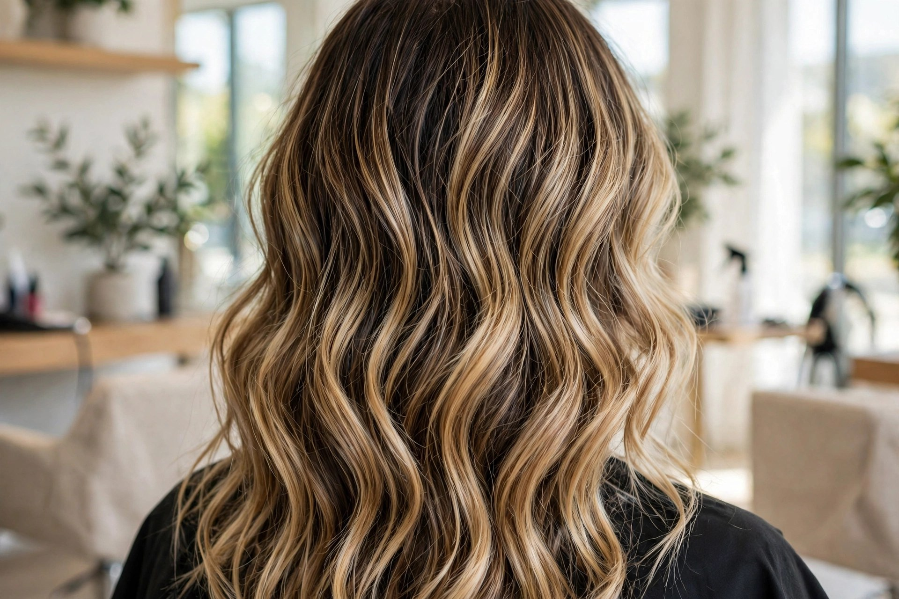
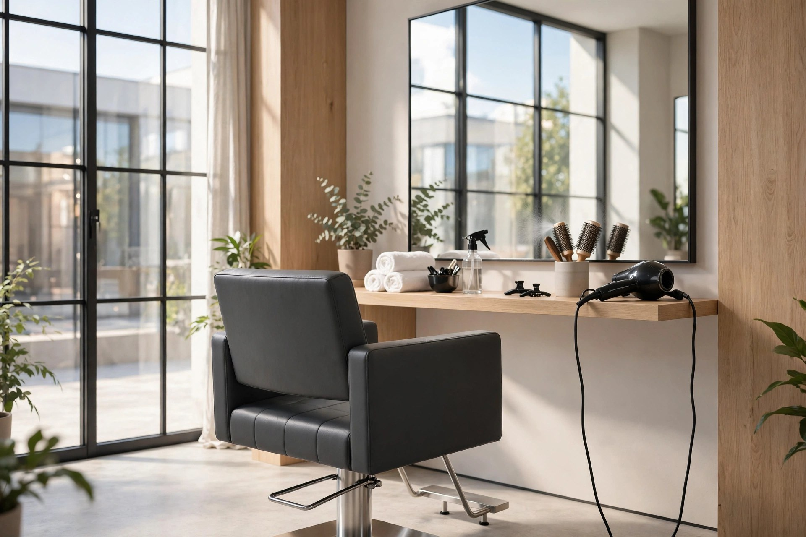

Haircuts
Precision cuts for every hair type — shaped to your face and your routine.

Fort Wayne, IN · Hair salon
Cuts, color, balayage and updos — personal, one-on-one styling in the heart of Fort Wayne.
★★★★★ 5.0 — 9 reviews on Birdeye
New clients
Balayage, full color or a brand-new cut — call ahead and we'll reserve the time your hair deserves.
What we do
Precision cuts for every hair type — shaped to your face and your routine.
Full color, root touch-ups and gray coverage with rich, even results.
Hand-painted dimension and sun-kissed highlights that grow out softly.
Elegant updos and styling for weddings, proms and special nights out.
Restorative treatments that bring dry, damaged hair back to life.
Smooth, bouncy blowouts for a polished finish — with or without styling.

Why choose us
A personal, detail-first approach: you get a real consultation, an honest opinion and hair that looks great long after you leave the chair.
Our work


Good to know
Yes — booking ahead by phone guarantees your spot, especially for color services that take longer.
Yes. Balayage, full color, highlights and corrective color are core specialties here.
Tuesday 9 AM – 8 PM, Wednesday 9 AM – 7 PM, Thursday 10 AM – 7 PM, Friday and Saturday 9 AM – 5 PM. Closed Sunday and Monday.
122 W Wayne St, Fort Wayne, IN 46802 — downtown, easy to reach.
Visit us